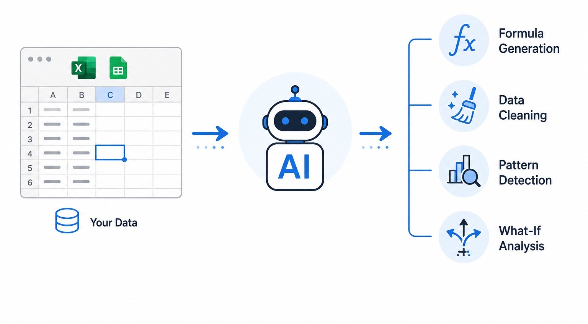
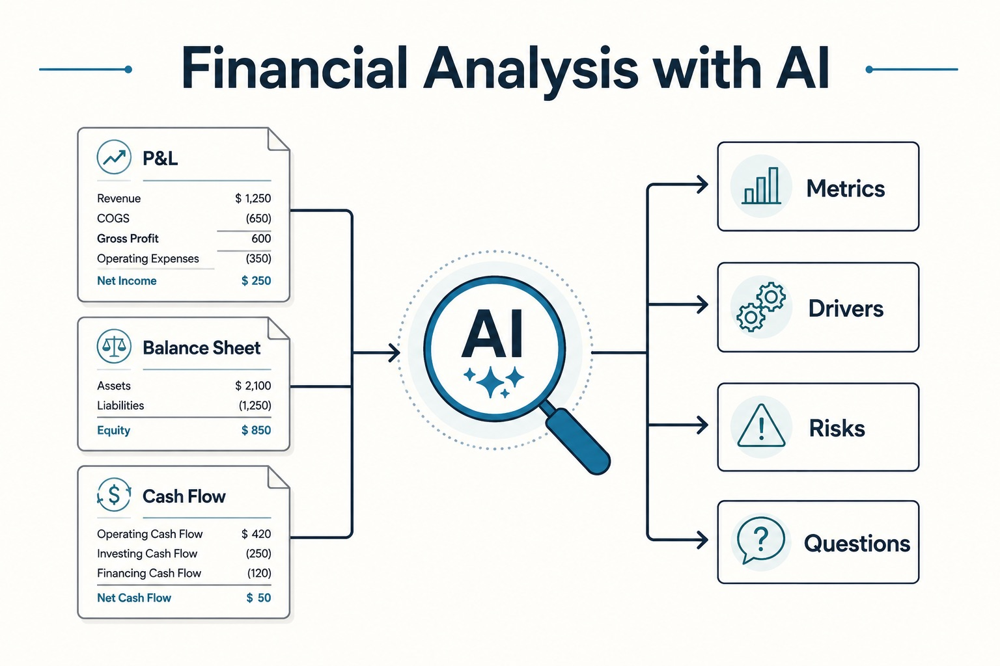
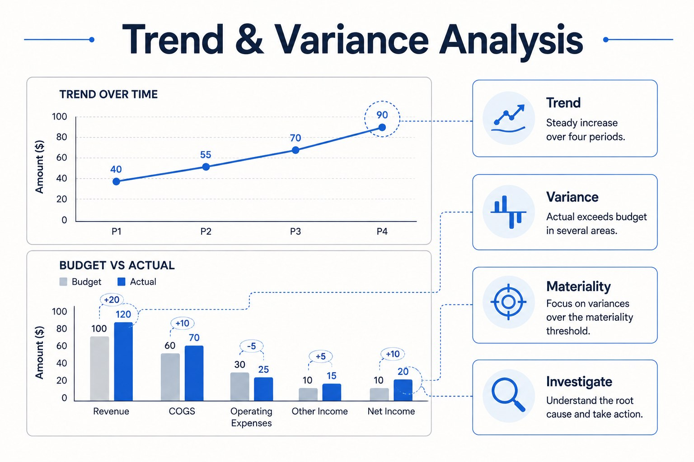
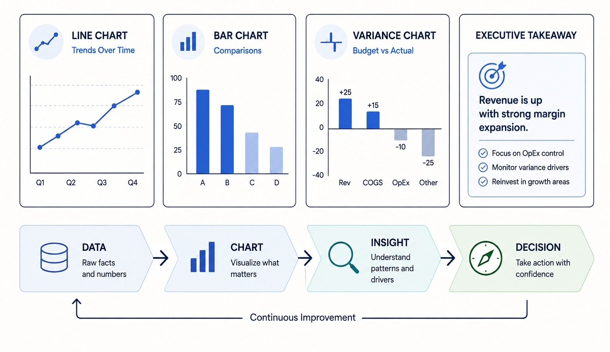
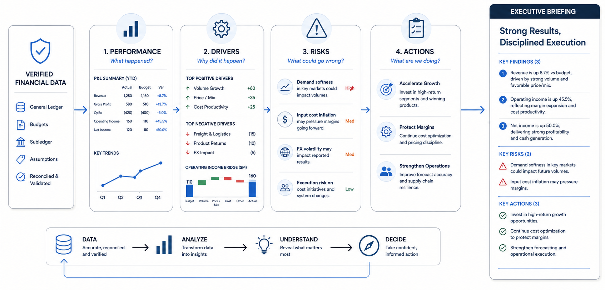

01 / 10
01 · Working with Spreadsheets
AI + Excel / Google Sheets
Use AI to understand, clean, transform and interrogate spreadsheet data—without surrendering financial judgment.
- Translate business questions into formulas and analysis steps
- Identify missing values, duplicates, inconsistent labels and unusual records
- Generate and explain formulas in plain language
- Use AI to suggest what to investigate next
AI accelerates spreadsheet work; the manager still owns the logic and the numbers.

Facilitator notesFrame AI as a spreadsheet thinking partner, not an autonomous finance analyst. Emphasize that attendees should never paste confidential financial data into an AI tool unless their organization's approved environment permits it.
02 / 10
Practical
Spreadsheet Interrogation
Synthetic departmental expense data
Department | Jan | Feb | Mar | Apr Operations | 42,000 | 44,500 | 51,800 | 49,700 Sales | 28,400 | 30,100 | 29,600 | 35,900 Administration | 18,200 | 18,700 | 19,100 | 24,800 IT | 12,500 | 14,900 | 15,300 | 21,700
Live demo prompt
I am analyzing this synthetic departmental expense table. First, check the structure and identify any data-quality issues. Then calculate month-over-month percentage changes by department, rank the largest increases in April, and explain the formulas you used. Finally, suggest three follow-up questions a finance manager should investigate. Do not invent explanations for the changes; label hypotheses as hypotheses.
03 / 10
02 · Financial Analysis
Financial Analysis with AI
Move from “what happened?” to “what does it mean?” by combining financial metrics with management context.
- Summarize Profit and Loss, balance-sheet and cash-flow information
- Calculate margins, growth rates and key ratios
- Separate facts, interpretations and hypotheses
- Ask AI to identify questions that deserve management attention
Good financial prompting asks AI to explain the evidence—not manufacture a story.

04 / 10
Practical
AI-Assisted Financial Analysis
Synthetic management snapshot — fictional hotel group
Metric | Prior Year | Current Year Revenue | 8,400,000 | 9,450,000 Operating Costs | 5,880,000 | 6,930,000 Operating Profit | 2,520,000 | 2,520,000 Receivables | 1,050,000 | 1,480,000 Cash | 1,920,000 | 1,610,000
Live demo prompt
Analyze this synthetic financial snapshot for a fictional hotel group. Calculate revenue growth, operating-cost growth, operating margin for both years, and changes in receivables and cash. Identify the three most important management signals. For each signal, cite the numbers supporting it and provide one question management should ask. Clearly separate facts from interpretations.
05 / 10
03 · Trends & Variances
Trend & Variance Analysis
AI can rapidly scan periods, compare actuals with budgets, and surface where management attention is most needed.
- Trend analysis: direction and rate of change over time
- Variance analysis: actual versus budget, prior period or forecast
- Materiality: prioritize differences that matter
- Root-cause questions: investigate drivers rather than accept AI explanations
The goal is not to find every variance; it is to find the variances worth explaining.

06 / 10
Practical
Find the Variances That Matter
Synthetic budget-versus-actual data
Line Item | Budget | Actual Room Revenue | 2,400,000 | 2,610,000 Food & Beverage | 720,000 | 655,000 Payroll | 1,050,000 | 1,190,000 Utilities | 210,000 | 278,000 Marketing | 180,000 | 205,000
Live demo prompt
Using this synthetic budget-versus-actual table, calculate the absolute and percentage variance for every line. Rank the variances by management significance, not simply by percentage. Identify two favorable and two unfavorable variances. For each major variance, give one evidence-based management question. Do not assume causes that are not in the data.
07 / 10
04 · Data Visualization
Data Visualization for Executives
Turn analysis into visuals that help leaders see the message quickly and ask better questions.
- Choose charts based on the decision, not decoration
- Use trends for movement over time
- Use bars for comparisons and variances
- Annotate the few numbers executives need to notice
- Keep charts simple enough to explain in 30 seconds
A good executive chart answers one important question at a glance.

08 / 10
Practical
Turn Numbers into an Executive Chart
Synthetic monthly performance data
Month | Revenue | Operating Profit Jan | 1,920,000 | 520,000 Feb | 1,980,000 | 505,000 Mar | 2,120,000 | 570,000 Apr | 2,260,000 | 610,000 May | 2,180,000 | 545,000 Jun | 2,410,000 | 675,000
Live demo prompt
Using this synthetic monthly data, recommend the best executive visualization for a management meeting. Explain why. Then create a concise chart with title, x-axis, y-axis, series, and the single management message the chart should communicate. Also identify one caution about interpreting the data.
Example 1 — Line Chart: Trend
Create a professional line chart titled “Monthly Revenue Trend” using this data: Jan $1.92M, Feb $1.98M, Mar $2.12M, Apr $2.26M, May $2.18M, Jun $2.41M. Clearly label the months and values and highlight the overall trend.
Example 2 — Bar Chart: Comparison
Create a professional bar chart titled “Budget vs Actual Expenses” using: Payroll — Budget $1.05M, Actual $1.19M Utilities — Budget $0.21M, Actual $0.278M Marketing — Budget $0.18M, Actual $0.205M F&B — Budget $0.72M, Actual $0.655M. Show Budget and Actual side by side and label the variances.
Example 3 — Pie Chart: Composition
Create a professional pie chart titled “Operating Expense Mix” using: Payroll 45%, Operations 25%, Utilities 12%, Marketing 10%, Other 8%. Show each category with its percentage and a clear legend.
09 / 10
05 · Executive Report
Executive Financial Reporting
Use AI to transform verified financial analysis into a concise executive report that highlights performance, risks and actions.
- Start with verified numbers and clearly labeled assumptions
- Structure report around performance, drivers, risks and actions
- Use AI for synthesis and language—not final approval
- Make every important claim traceable to a source number
- End with decisions or questions for management
The executive report is the bridge between financial information and managerial action.

10 / 10
Practical · Capstone
Build a One-Page Executive Report
Live demo prompt
Act as a senior financial analyst preparing an executive management report. Using ONLY the verified synthetic figures below, create a concise one-page executive financial report. VERIFIED FIGURES: Revenue: 8,400,000 → 9,450,000 Operating Profit: 2,520,000 → 2,520,000 Receivables: 1,050,000 → 1,480,000 Cash: 1,920,000 → 1,610,000 Payroll: above budget Utilities: above budget Your report must contain: 1. EXECUTIVE HEADLINE Write one concise headline that captures the most important financial message. 2. KEY PERFORMANCE FIGURES Calculate and display: - Revenue growth % - Operating margin for both periods - Change in receivables - Change in cash Present these figures in a compact executive KPI table. 3. MANAGEMENT CHART Create ONE simple chart that best communicates the most important financial comparison. Choose the chart type yourself and explain briefly why it is appropriate. Use only the supplied figures. 4. THREE KEY FINDINGS For each finding: - State the finding - Give the supporting figure - Explain why management should care 5. TWO FINANCIAL RISKS Identify two potential risks supported by the data. Clearly distinguish evidence from interpretation. 6. THREE MANAGEMENT ACTIONS Suggest three practical actions. Do not invent causes or recommend actions that require information not provided. 7. THREE QUESTIONS FOR FURTHER INVESTIGATION Identify questions management should answer before making major decisions. IMPORTANT RULES: - Use ONLY the supplied figures. - Do not invent causes, forecasts, assumptions, or additional financial data. - Clearly label interpretations as interpretations. - Every numerical claim must be traceable to a supplied figure or a calculation from those figures. - Keep the report concise and suitable for a senior management meeting. - Make the most important message obvious within 30 seconds. - Use professional executive language. - Separate facts, interpretations, risks, and recommendations.
Workflow: Data → Analysis → Visualization → Executive Narrative → Human Verification
End of Session 3 · Allow remaining time for questions, discussion and participant reflections.